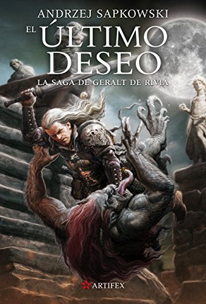
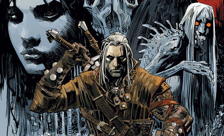

El Ultimo Deseo

El último deseo está compuesto por un conjunto de historias que cuentan el pasado de Geralt tituladas: El Brujo, La semilla de la verdad,
El mal menor, Cuestión de precio, El confín del mundo y El último deseo. Obviamente no voy a explicaros cada uno de los relatos porque perderían la magia, pero todos ellos merecen mucho la pena porque están llenos de giros argumentales y muchos monstruos. Además de estas seis historias, nos encontramos con varios mini capítulos que nos narran los acontecimientos del presente, todos ellos titulados con La voz de la razón.
El libro comienza en el presente. Geralt está curándose de sus heridas en un santuario bajo el cuidado de una de las sacerdotisas, Nenneke. Aquí, Geralt va recordando sus antiguas aventuras, alternando presente y pasado, donde conoceremos a muchos personajes y vivencias del brujo, que servirán de unión para el futuro de la saga.
Considero que la ambientación está muy conseguida. Nos sumergiremos en este mundo lleno de bestias y seres monstruosos con mucha magia de por medio de forma paulatina. Quizás al principio esté todo muy confuso, pero en nada que leamos ya formaremos parte del mundo.

La mayoría de los personajes son importantes y aparecerán más de una vez tanto en esta novela como en el futuro.
En este primer título tengo que destacar a Geralt, como es lógico.
Él es un personaje carismático, sarcástico y que sabe lo que hace.
Es cierto que le repudian por ser brujo, pero él no se deja llevar por las habladurías, de hecho, más que molestarle los comentarios, le cansan.
En resumen, Geralt es un buen protagonista y personaje muy distinto a lo que nos tienen acostumbrados. También me gustaría hablaros de uno de mis personajes preferidos, la maravillosa hechicera Yennefer. En este libro ya hace acto de presencia y, aunque todavía nos quede mucho por conocer de ella, estoy segura de que os encantará.
La prosa del autor es un poco densa, por lo que aquellas personas que no son asiduas a leer este tipo de fantasía, quizás no disfruten de la pluma en su totalidad. A pesar de esto, recomiendo que le deis una oportunidad. El autor combina en su estilo humor y sarcasmo, así que más de una vez nos sacará algunas risas. Personalmente, me gusta su estilo, solo es cuestión de acostumbrarse.
Para terminar, comentar que este libro no es para todo el mundo.
Yo lo recomiendo porque me encanta este tipo de fantasía y disfruto mucho con los personajes principales.
Andrzej Sapkowski
Enlace de la reseña
Reseña de El último deseo de Andrzej Sapkowski